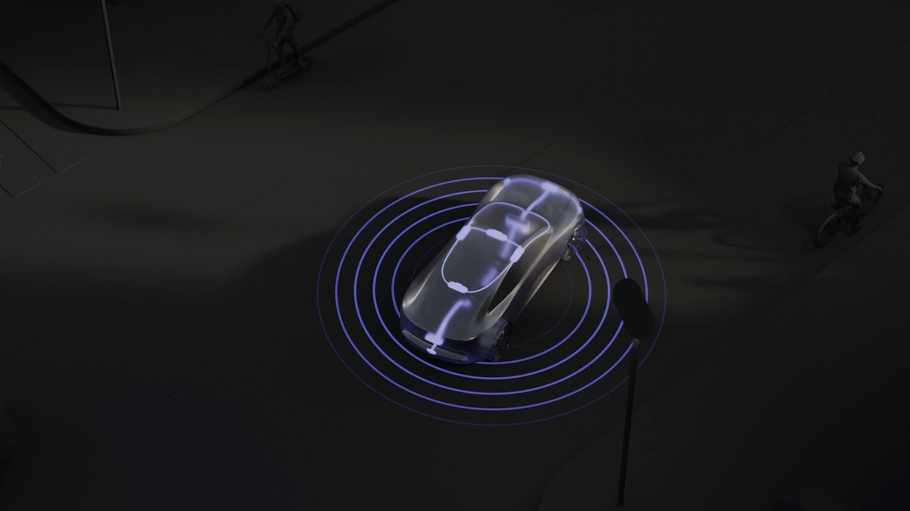

Nuro Driverは、自動運転機能を可能にする車載ソフトウェアとハードウェアを含む。Nuroは、業界をリードするソフトウェアとハードウェアにより、さまざまな道路と移動に自動運転を提供することを目指している。
Nuro Driverのソフトウェアは、安全で自然な運転挙動を模倣するよう設計された最先端AI技術である。E2E AIモデルと信頼性の高いセーフガードを統合し、精度と信頼性を両立する。
Nuroは、リアルタイム知覚データと低コストな地図事前情報を、地理空間Foundation Modelで組み合わせる新しいAI駆動マッピングを開発している。この方式は、高精度なグローバル自己位置推定、オンライン地図特徴推論、リアルタイムセンサーキャリブレーションを可能にする。道路や交通制御の変化にリアルタイムに応答し、複雑な都市環境で性能を維持する。
NuroのAI知覚システムは、統一Foundation Model上に構築されている。アーキテクチャはシンプルで高性能、かつスケーラブルである。多様なセンサースイートを統合できる柔軟性があり、行動計画との豊かなインターフェースを提供することで、自律システム全体の判断を支える。
Nuro Driverは、LiDAR、レーダー、カメラなどのセンサー構成と、車載計算基盤を組み合わせる。Nuroはライセンス可能な自律運転基盤として、車両タイプや用途をまたいで展開できるプラットフォームを志向している。
開発責任者の視点では、Nuro Driverは「E2E AI + ガードレール + AIマッピング + 車載計算基盤」を一体で製品化する例であり、研究デモではなく商用パートナーへ提供する自律運転スタックとして重要である。